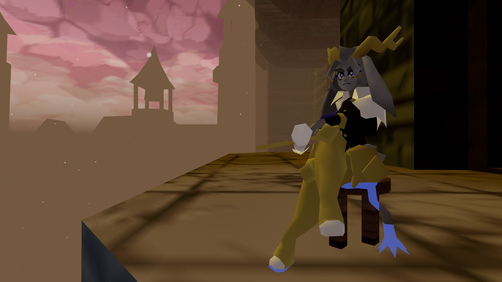

Pseudoregalia is a 3d indie platformer that was created by Rittzler, HiMyNameIsMatt, TechnoColorYawn, Potatoteto, Pluswplus and StillCrisp. Here you play as Sybil, a human goat hybrid with acrobatic finesse. In this game Sybil explores a dream dimension who has the structure of a castle sitting atop of a floating island. In this world, you can find tons of useful abilities and discover what brought turnmoil to this once peaceful land. The game offers tons of movement mechanics that can give you a lot of freedom on how to reach any point of the game (sometimes you can even sequence break the game if you're clever enough). Another thing to boast about are the aesthetics of the game. It gives off the vibes of the early PS2/GameCube era with lovely dreamy visuals. My main two gripes with the game are its enemies and bosses. The enemy designs are cool, but they don't offer much of a challenge in a fight and there aren't too many of them throught the game. The two bosses in the game are well thought out and have cool attack patterns. Only issue is that there are only 2. Wish there were more of them.